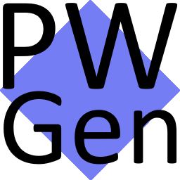

|

PasswortGeneral 0.1α | 9.6.2018 OptionenAllgemein Automatik Webseiten Aussehen Hilfe
Bitte beachten:
Dies ist eine alpha-Version! Es können sich noch viele Dinge ändern, inclusive der eigentlichen Generator-Funktion. Daher erzeugte Passwörter unbedingt sichern! |
|
Einführung:PWGen erzeugt einmalige Passwörter für jede Gelegenheit. Keine Zettelwirtschaft mehr, kein Überlegen welches Passwort denn nun in diesem oder jenem Forum verwendet wurde, ein Mausklick und das Passwort steht dort wo es hin gehört, im Passwort-Feld. Sicherheit der PasswörterDie Passwörter sind sicher, solange man niemandem verrät welche Vorgaben man benutzt um seine Passwörter erzeugen zu lassen. Es werden keinerlei Daten an den Programmierer oder andere Dritte übertragen. Sollte es einmal eine Lücke bei einem Anbieter geben, kostet es nur wenige Mausklicks um für diesen Anbieter ein neues Passwort zu erzeugen. Verschiedene Anmeldungen pro SeitePWGen unterstützt die Möglichkeit, sich mit verschiedenen Identitäten an einer Seite anzumelden. Dabei bleibt es aber unauffällig: Nur wenn man in den Einstellungen explizit angibt, dass man auf einer Seite verschiedene Profile benutzt, fragt es bei der Passwortabfrage auch nach, welcher Name benutzt werden soll um das Passwort zu erzeugen. So bleibt es bequem für den normalen Benutzer, gibt dem Vielsurfer aber alle Möglichkeiten an die Hand selbst zu entscheiden. Wer mehr über die Art und Weise der Passworterzeugung von PWGen erfahren möchte, kann dies in der Hilfe nachlesen. Danke an:
- Die vielen Helfer von www.camp-firefox.de! Automatik-Funktionen:WIP ... WIP ... WIPIch arbeite dran ... work in progress ... ich arbeite dran ... work in progress Einstellungen zum Speicher...WIP ... WIP ... WIPIch arbeite dran ... work in progress ... ich arbeite dran ... work in progress Einstellungen zum Aussehen...WIP ... WIP ... WIPIch arbeite dran ... work in progress ... ich arbeite dran ... work in progress HilfeWIP ... WIP ... WIPIch arbeite dran ... work in progress ... ich arbeite dran ... work in progress Einführung:WIP ... WIP ... WIPIch arbeite dran ... work in progress ... ich arbeite dran ... work in progress Hilfe zum Popup des AddOn-ButtonsWIP ... WIP ... WIPIch arbeite dran ... work in progress ... ich arbeite dran ... work in progress Hilfe zu den OptionenFehlermeldungen:ScriptfehlerIch arbeite dran ... work in progress ... ich arbeite dran ... work in progress Keine AddOn-Manipulationen möglichIch arbeite dran ... work in progress ... ich arbeite dran ... work in progress Keine about:-Manipulationen möglichIch arbeite dran ... work in progress ... ich arbeite dran ... work in progress ~~~~ fehltIch arbeite dran ... work in progress ... ich arbeite dran ... work in progress Kontakt bei Fragen oder Problemen:WIP ... WIP ... WIPIch arbeite dran ... work in progress ... ich arbeite dran ... work in progress F.A.Q. - häufig gestellte Fragen:WIP ... WIP ... WIPIch arbeite dran ... work in progress ... ich arbeite dran ... work in progress |